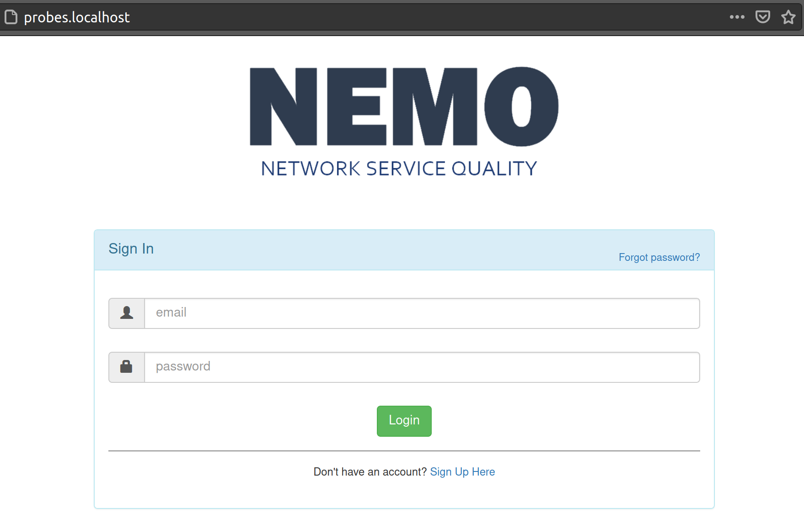
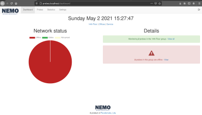

Project description
Open Nemo is a set of software tools split into a server side and network client side part.
The basic idea is to deploy the probe(s) on the network, have them collect
network quality parameters and then report that information back to the server which
stores the collected information and displays the current network status.
Before you start
It is assumed the user has some experience seting up a linux environment including
apache, mysql, php, stuff like that. The installation instructions below start from the
point where you already have a apache server running including support for php and
mysql. You will also need a way to setup mysql users and databases. I did this on a
linux server, I see no reason why this wouldn't work on a windows machine but I have not tried it.
The previous comments are for the server side software. The probe side software
is for linux based machines only. You can run it on a raspberry pie (although consider
any potential caps on network speeds as you will not be able to test the full speed range
if the probe cannot use Gb ethernet, for example).
IMPORTANT ensure you have the mod_rewrite module installed in apache.
Install server side
-
Download the code from github.
- Place the contents of the downloaded folder to /var/www/probes.localhost or wherever
you are going to serve your files from. You can delete the contents of the docs folder. That is
only the files for howto you can get online.
-
Open config/database.php, scroll down and set yout localhost, username,
password and database. This is what you want it to be, you will setup all of this up
later. You can leave that information as is if you would like. The instructions
that follow assume you made no changes to the information on this file. Be careful
if you are going to run this on a production machine. You will want to change this information
in that case.
-
Setup the server database:
1) Open a terminal window and enter mysql as root: "sudo mysql"
(you will have to create a new user and a new database).
2) CREATE DATABASE zodiak_app;
3) Now create a new user: CREATE USER 'zodiak_app'@'localhost' IDENTIFIED BY 'your_db_password';
4) GRANT ALL PRIVILEGES ON *.* TO 'zodiak_app'@'localhost'; //actually requesting access to all dbs.
You may want to limit this to only the database you just created.
5) FLUSH PRIVILEGES;
6) Copy the provided database to this new database you just created:
mysql -u zodiak_app -p -h localhost zodiak_app < /var/www/probes.localhost/zodiak_app.sql
Replace /var/www/probes.localhost/zodiak_app.sql with the path where you have the database file.
-
You should now be able to go to https://probes.localhost and should see the login form.

Enter "info@yourserver.com" as username and "test" as password to login. You should now be taken to the
dashboard which looks something like this:

Install probe side